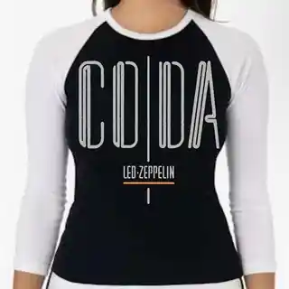
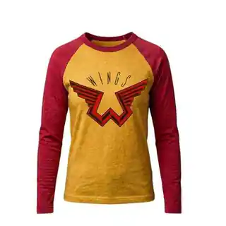
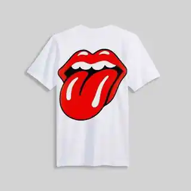

Made To Order
Orders are printed after checkout so each drop stays small and intentional.
Custom vintage baseball tees
Soft 3/4 sleeve raglans made for record stores, ballparks, road trips, and the stories you keep wearing.


The current lineup
Soft raglans, custom graphics, and worn-in color from the first wash.
Fit guide
Measurements are approximate and can vary slightly by blank. For a relaxed vintage feel, size up.
| Size | Chest | Length | Sleeve |
|---|---|---|---|
| S | 18" | 27" | 23" |
| M | 20" | 28" | 24" |
| L | 22" | 29" | 25" |
| XL | 24" | 30" | 26" |
| 2XL | 26" | 31" | 27" |
Orders are printed after checkout so each drop stays small and intentional.
Most tees are ready to ship within 5-10 business days after order confirmation.
Wash cold, inside out, and tumble dry low to keep the print soft and worn-in.

Made for people who keep the ticket stub
Can You Dig It? Retro makes custom baseball tees that look like they already have a story. Think faded merch tables, summer doubleheaders, crate digging, and sleeves with just enough contrast.
Each run is made to feel personal, from small-batch graphics to sleeve colors that look like they came from a favorite old merch table.
Because tees are made to order, returns are handled case by case. If something arrives wrong or damaged, reach out within 7 days.
Have a design idea, sleeve color, or blank request? Send the details and the shop can confirm what is possible before printing.
Your order details are only used to reply, invoice, print, and ship. No extra list unless you ask to be notified about drops.
Can You Dig It? Retro is an independent custom apparel shop. Product names describe the current design lineup.